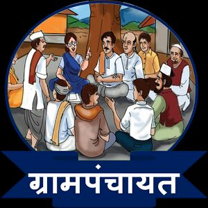

<div style="text-align: center;">
 
</div>

<div style="text-align:center; margin-top: 40px;">
<a style="padding-right: 20px;" href="index.html">मुख्य पान</a>
<a style="padding-right: 20px;" href="आमच्या बद्दल.html">आमच्या बद्दल</a>
<a style="padding-right: 20px;" href="सेवा.html">सेवा</a>
</div>
<h1 style="font-size:50px; text-align: center;">ग्रामपंचायत सरदवाडी </h1>


<div style="text-align:center;"> <a style="font-size:20px; background-color: black; padding: 15px 35px 15px 35px; color: white;"href="https://www.google.com">आणखी वाचा </a> </div>

<p style="font-size:25px; text-align: center;">ग्रामपंचायत सरदवाडी ही पुणे नगर हायवे वरील मोठी ग्रामपंचायत आहे.</p>

<hr>


 


